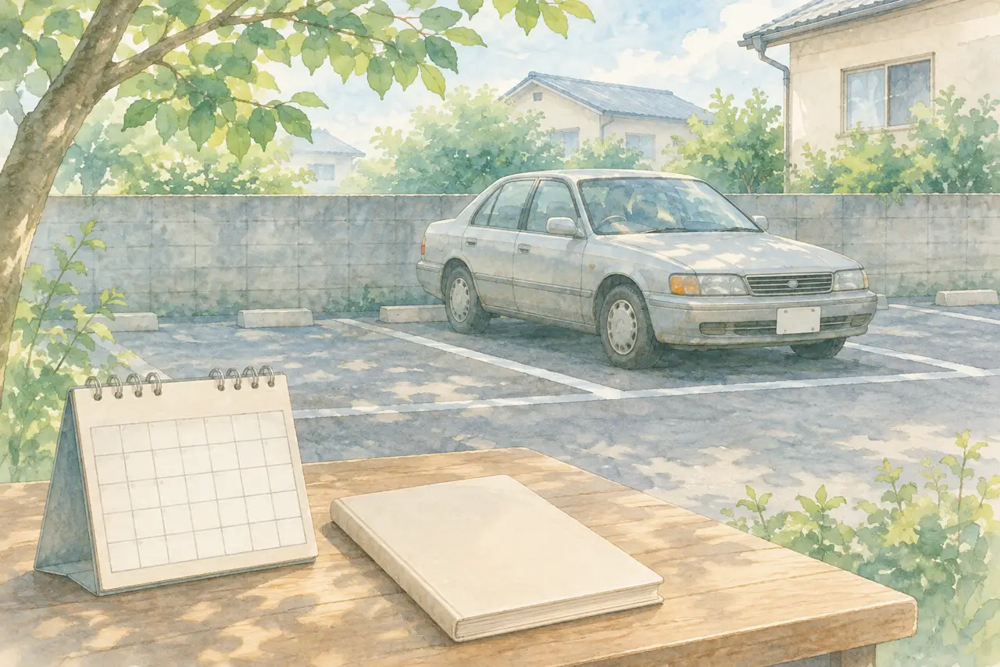
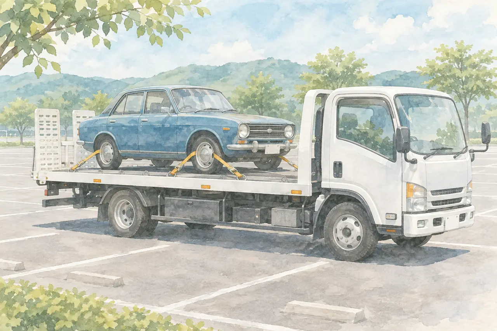

駐車場代が気になる方へ
駐車場代がもったいない。乗らなくなった車は？
乗らなくなった車は、いつ・どう手放す？解約日と引き渡し日の合わせ方
公開
こんにちは、東京都足立区江北で自動車解体・廃車買取をしている「大崎商店 環七店」です。
「ほとんど乗らないのに、駐車場代だけ毎月かかっている」
「手放したいけれど、駐車場の解約と、車の引き渡しは、どちらが先？」
車は、乗らない日にも、駐車場代がかかります。 手放すと決めたら、駐車場の解約日と、車を引き渡す日を、合わせて決めましょう。
この記事の要点
- 乗らなくても、駐車場代は毎月かかります。 たとえば月15,000円なら、1年で180,000円です（例です）。
- 解約の連絡は予告期限までに、車の引き渡しは契約終了日までに。 先に契約が終わると、車の置き場所がなくなります。引き取りの予定と合わせて調整しましょう。
- 大崎商店は、駐車場の解約日が決まっていても、ご相談に応じます。 引き取りは、日程を優先して調整します。早く伺える場合も多いですが、日によって変わります。
① 乗らない車の駐車場代は、1年でいくら？

駐車場代は、月額 × 12か月で、1年の金額が分かります。
例：月15,000円 × 12か月 ＝ 年180,000円
この金額は、計算のしかたを示す例です。相場や、全国の平均ではありません。ご自身の契約の金額で、計算してみましょう。
この年額は、毎月の駐車場代だけの計算です。 契約によっては、更新料・更新事務手数料などが別にかかります。1年間に必要なお金を見積もるときは、その年に支払う更新費用も加えましょう。
駐車場代のほかにも、自動車税・保険・車検の費用が、乗らなくてもかかります。駐車場代以外も含めた負担の考え方は、車の維持費は月いくら？あまり乗らない車を手放す判断の目安の記事をご覧ください。
② 駐車場の解約と、車の引き渡し、どちらが先？
「解約を申し出る日」と「契約が終わる日」は別です。 車を出すまで解約の連絡を待つと、予告期間の分だけ、駐車場代が余計にかかることがあります。契約終了日までに車を出せるよう、先に日程を調整しましょう。
先に、駐車場の管理会社や大家さんに、次のことを確認しましょう。
- 解約の予告期間：何か月（何日）前に伝える決まりか
- 月の途中で解約したときの、駐車場代：日割りになるか、その月の分が必要か
- 契約を終了できる日と手続き方法：月末だけか、日にちを選べるか。書面やWebでの申し出が必要か
- 更新日と更新費用：更新料・更新事務手数料などがあるか。更新せずに解約する場合、いつまでに申し出る必要があるか
確認した予告期間に間に合うよう、車を引き渡せる日の候補を依頼先に相談し、駐車場の解約を申し出ます。
手放すことが決まっていて更新日が近い場合は、更新費用が発生する条件も、早めに管理会社へ確認しましょう。 更新日の直前に連絡しても、予告期間の関係で更新費用を避けられないことがあります。
- 解約日が決まっている場合は、「この日までに、車を出したい」と、先に伝えましょう
- 解約日をまだ決めていない場合は、引き渡し可能な時期と解約の予告期限を合わせて確認しましょう
- 期限内に引き渡せない見込みなら、契約が終わる前に、管理会社へ延長の可否などを相談しましょう
③ 手放す前に、準備すること
車検証や所有者の情報は、引き取りを依頼する前に確認しておきましょう。 車内の必要なものは、引き渡しの前に取り出します。
- 車検証・鍵：依頼前に、あるかと保管場所を確認する。車検証がないときは、車検証をなくしたけど廃車できる？の記事をご覧ください
- 車の中の荷物・ETCカード・ナビのデータ：必要なものの取り出しやデータの消去を、引き渡し前に行います。廃車を頼む前にやることチェックリストの記事で、まとめています
- ローンが残っているか：所有者がローン会社の場合は、手続きが変わります。ローンが残っている車は廃車できる？の記事をご覧ください
- 任意保険：解約の時期と、再び車に乗るときのために、任意保険の中断証明も、確認しておくと安心です
引っ越しで手放す場合は、引っ越しで車を手放すとき、廃車と売却どちらがいい？の記事をご覧ください。
④ 大崎商店の場合：解約日が決まっている車

解約日が迫っていると、焦ってしまいますよね。 まず、解約日と車の場所を、お電話でお知らせください。
大崎商店では、駐車場の解約日が決まっている場合も、ご相談に応じます。 引き取りのご依頼は、日程を優先して調整しています。ご連絡をいただければ、比較的早く伺える場合が多いです。ただし、日によって、仕事の状況が変わります。 距離や、そのときの状況によるため、ご希望の日までの引き取りを、必ずお約束するものではありません。
まず、環七店（03-3854-4141）へお電話ください。次のことを、お伝えいただくと、スムーズです。
- 車がある場所：駐車場の町名と、道の広さ
- 駐車場を出る期限：解約日。決まっていなければ、いつごろまでに手放したいか
- 車の種類と状態：軽自動車か普通車か。敷地内で動かせるか、まったく動かないか
- 車検の期限・車検証の有無・所有者の名義
大崎商店では、
- 解体費用・手続き代行費用・印紙代は、別請求しません
- 足立区内は、引き取り無料です
- 足立区外も、買取価格がつかない車は、環七店または入谷店から車で片道約30分圏内は引き取り無料（目安です）
- 買取価格がつく車は、圏外でも、所在地と車の状態によっては無料で引き取り（事前にご案内します）
- 車によっては、引き取り当日その場で現金買取もできます
- 車のお持ち込みは、どこからでも歓迎（基本は環七店。日時は、事前にお電話でご相談ください）
片道約30分圏内が、無料の目安です。 それより遠い場所も、車の種類や状態、日程によっては、お引き受けできる場合があります。遠い場合は、人件費や高速代がかかるため、無料が難しいこともあります。場所を伺って、事前にご案内します。
動かない車は、ワイヤーで積載車の荷台に引き上げて積むこともできます。敷地内で車を動かせるか、近くに積載車を止めて積み込めるかによって対応が変わります。必要な場所を確保できない現場では、お断りすることがあります。現場で積み込めないと分かった場合も、そのことで追加費用はいただきません。
解体作業は、解体業の許可を受けた入谷店で行います。引き取りの範囲は、出張引き取りの対応エリアの記事をご覧ください。
ご自分の車の場合が気になったら、お気軽にご相談ください。車の状態と置き場所を伺い、ご案内します。
電話で相談する03-3854-4141よくある質問
Q. 駐車場の解約日まで、あまり日がありません。
A. 早めに、お電話でご相談ください。車の場所と、解約日を伺い、日程を優先して調整します。日によって、仕事の状況が変わるため、ご希望の日までの引き取りを、必ずお約束することはできませんが、できる限りの調整をします。
Q. 月の途中で車を出したら、駐車場代は戻りますか？
A. 駐車場の契約によって異なります。日割りになるかは、管理会社や大家さんに確認してください。
Q. 手放すか、持ち続けるか、まだ迷っています。
A. 維持費を、月額に直して比べてみましょう。車の維持費は月いくら？あまり乗らない車を手放すかどうかの判断の目安の記事で、考え方を紹介しています。
Q. 車検が残っていますが、手放したほうがいいですか？
A. 車検が残っているかだけでは決まりません。今後どのくらい使うかと、これからかかる駐車場代などを比べて考えましょう。車の状態によっては、買取になることもあります。重量税や自賠責が戻る条件は、自動車重量税は廃車で戻る？の記事と、廃車したら自賠責保険は解約できる？の記事をご覧ください。
Q. 現場に来てもらってから、断られることはありますか？
A. 車を動かせるか、近くに積載車を止めて積み込む場所があるかによって変わります。積み込めずお断りする場合も、そのことで追加費用はいただきません。電話で、車の状態・場所・道の広さを先に伺い、断る事態をできるだけ減らします。
乗らなくなった車のご相談は、大崎商店へ
電話で相談する 03-3854-4141メールで相談する（フォーム）大崎商店 環七店
電話：03-3854-4141
〒123-0872
東京都足立区江北7丁目1−3
営業時間：月〜土 10:00〜18:00
休業日：日曜・祝日
環七沿い／舎人ライナー
西新井大師西駅
大崎商店 入谷店
電話：03-3899-2837
〒121-0836
東京都足立区入谷7丁目5−11
営業時間：月〜土 9:30〜17:30
休業日：日曜・祝日・第2土曜
乗らなくなった車のご相談は、環七店へ。 車の場所、駐車場を出る期限、車の状態をお伝えください。
くわしい条件と出典（読みたい方向け）
- 駐車場代の例：月15,000円は、計算の例（仮定）です。足立区の駐車場代の相場は、Park Directの足立区の掲載物件や、日本駐車場検索の足立区の相場情報などで、調べられます（掲載サイトや時期によって差があります）。
- 駐車場の解約：予告期間・申出方法・月の途中の扱いは、契約によって異なります。契約書や管理会社・大家さんに確認してください。参考として、Park Directも予告期間と契約ごとの日割り・満額の違いを案内しています。同社の条件を、すべての駐車場に当てはめるものではありません。解約日の案内／解約月の使用料
- 更新費用：有無・金額・更新周期は契約によります。参考：Park Direct・更新費用の種類／更新時期に解約する場合。
- 引き取りの条件：積載車は1台で、複数の引き取りを同時には行っていません。すぐに伺えるかは、そのときの仕事の状況によります。到着の日時は、電話で事前にご案内します。
- 車検証の所有者の確認：所有者がディーラーやローン会社の場合は、ご自身だけでは進められないことがあります。電話で、車検証の所有者と使用者を伺います。
※掲載画像はAIで生成したイラストです。実際の店舗・人物・車両とは異なります。